Inserting custom midis into GBA Games
In this short tutorial I am going to show you how to insert custom music in gba games (Sappy Compatible) More precisely I will insert a custom midi in Wario Land 4 with looping. We will try to use cross-platform free software.
Preparing the midi
Why?
Why the hell should we prepare the midi? Can’t we just insert it without touching it? Well, not really… Most untouched midi will sound bad in the game. And it is always a plus to be able to choose instruments.
So let’s choose a midi file!
Let’s take the tune of Angry Birds!
To here a more or less accurate ingame version of the midi, you might need the Wario Land 4 soundfont
The audio file plays like this with the soundfont:
So it doesn’t look so bad, does it? And if we process the steps further without touching this midi we'll obtain this:
It is ugly as hell, isn't it? So as I say, it is more or less acurrate. In the present case the instrument isn’t quite defined in the game. So now you now why this step is esssential.
How?
We need to find an instrument that is defined and that it sound good with the current midi. In our case it will be the main instrument in the Hall of Hieroglyphs level.
The original Hall of Hieroglyphs level music:
So how to put that main instrument in our Angry Birds song?
Then we need a software that enables us to quickly change between different instruments in order to test them quickly. It must supports soundfont switching so we can put the Wario Land 4 soundfont.
In our case I chose MuseScore. A FOSS cross-platform midi editor with a nice UI. (The UI is actually quite bad, I actually can't believe Kleyman likes it -IamRifki)
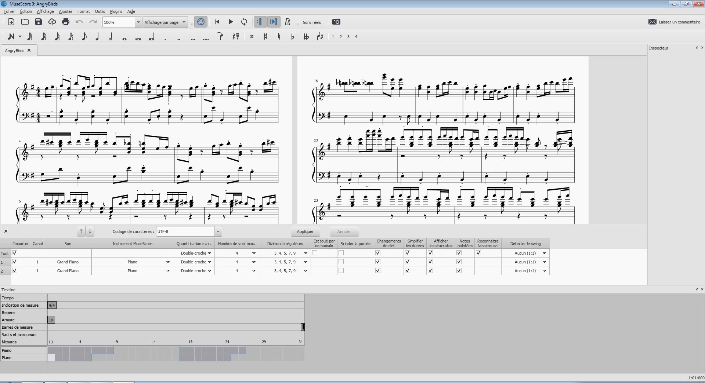
You have to put the Wario Land 4 Soundfont in the right folder (C:\Users<Put Your User Name>\Documents\MuseScore3\SoundFonts)
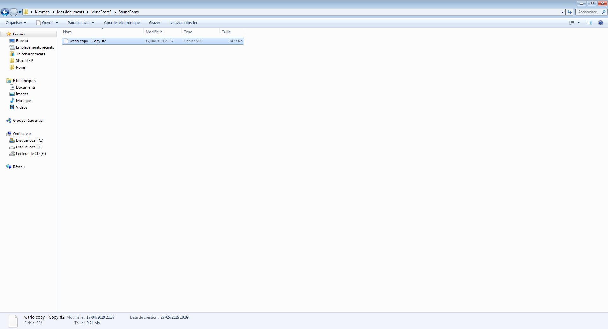
Then select View -> Synthesizer and select the soundfont.
Press F10 and select instruments. Select an instrument that is likely to be used in game. Don’t forget to test it. In our case, it will be “Hall of Hieroglyphs”.
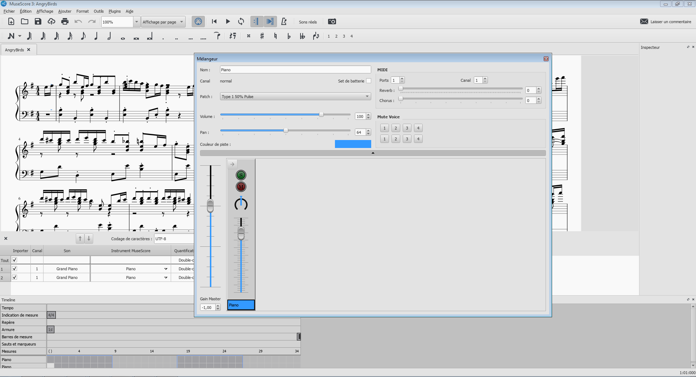 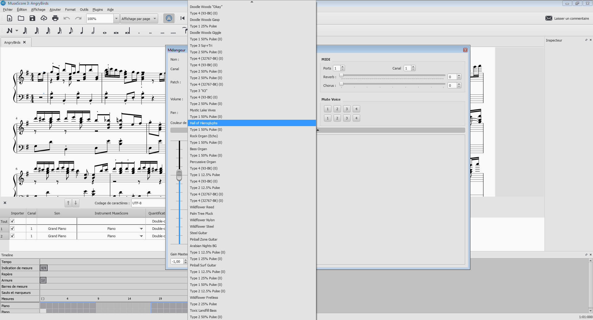
One issue is that the midi export doesn’t work well.
So we are going to see what really matters, the Bank and the Program used by the instrument.

Then we are going to use another tool: MidiQuickFix You'll need java to use it.
Launch it (with cmd.exe java -jar MidiQuickFix.jar)
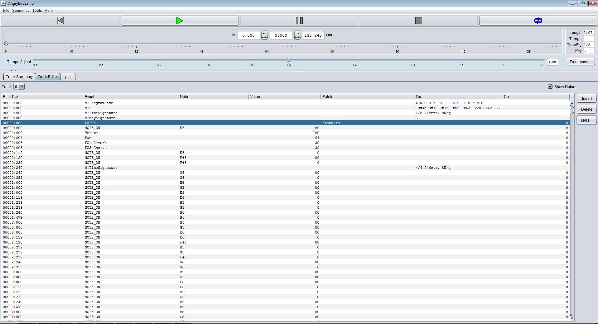
Open AngryBirds.mid and choose the Track Editor. Unfortunately we can’t see the hex value of the instrument so we are going to modify the PATCH value by hand. In all case we need to add a bank select instruction and set it to 2 to match our instrument.
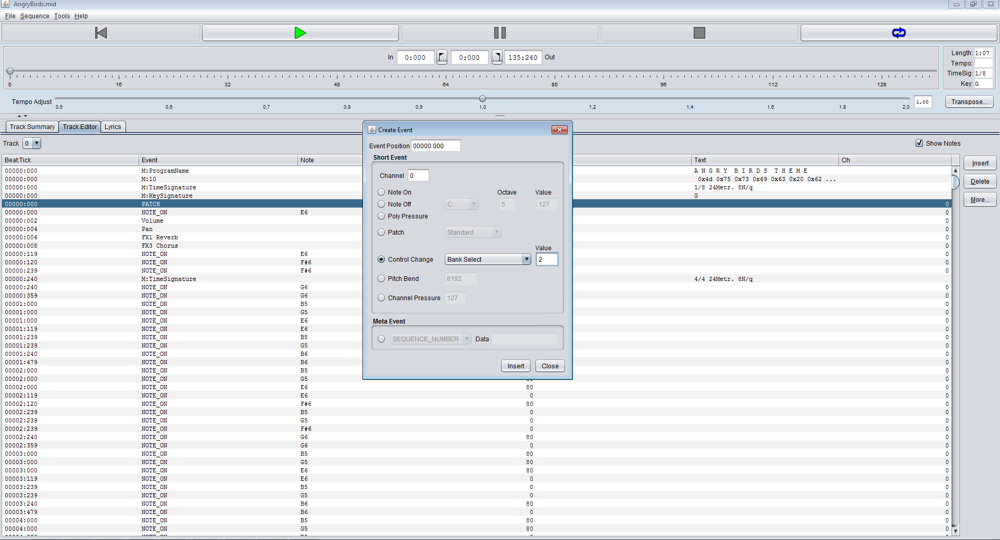 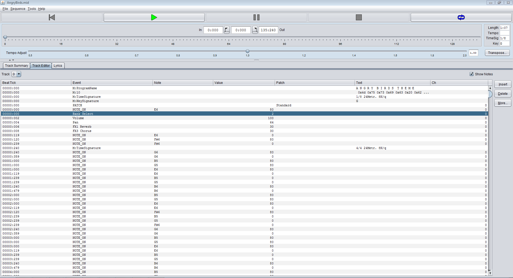
We are also going to add a loop that will work ingame. You need to add 2 Markers “[” and “]” at some position in time to set the loop boundary.
Select Insert -> Meta Event -> Marker and use one of the two character. Place them at different time position in the right order.
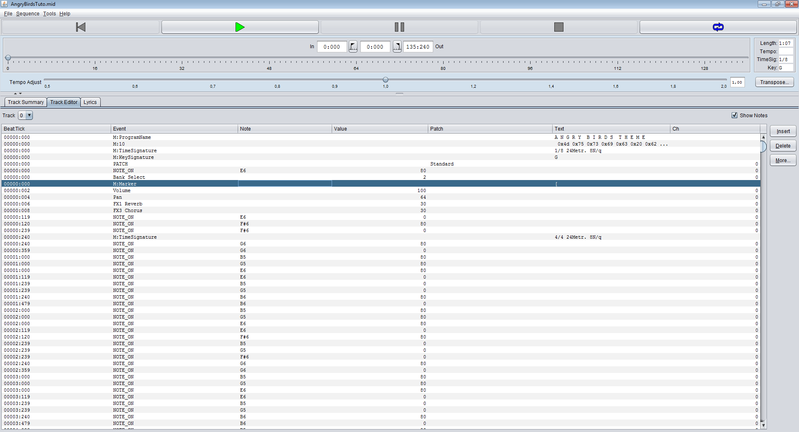
Let’s open the midi file in a hexadecimal editor (like HxD for example)
We can see the bank select instruction: “00 B0 00 02”
But what we want to do is to fit the instrument. As we have seen in MuseScore the program instrument is 16 so 0x10 in hexadecimal.
We need to put it right after the C0 (or Cx with x the instrument number counting from 0) Let’s change the PATCH event : “00 C0 00” -> “00 C0 10”
Also the Bank select instruction must be placed before the PATCH instruction to work correctly So cut/paste the instruction like in the following pictures
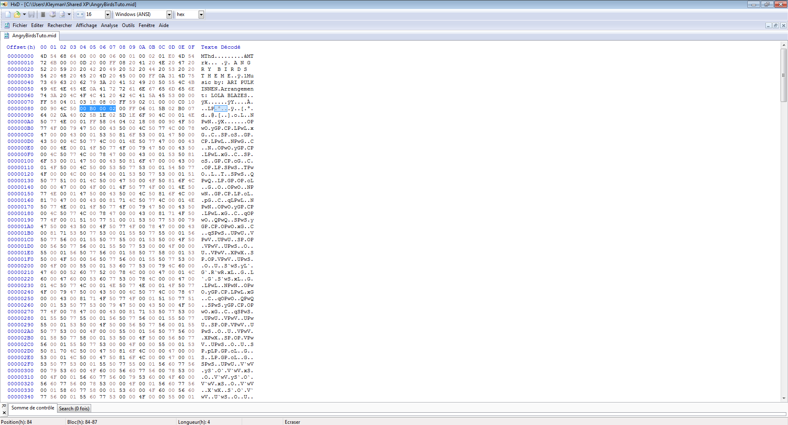 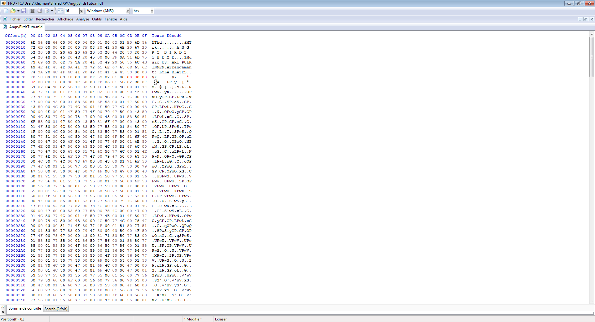
You should get this midi.
We can listen the midi again in VLC to make sure it match the instrument. Select the Wario Land 4 soundfont in VLC (CTRL-P to open preferences and go to advanced option)
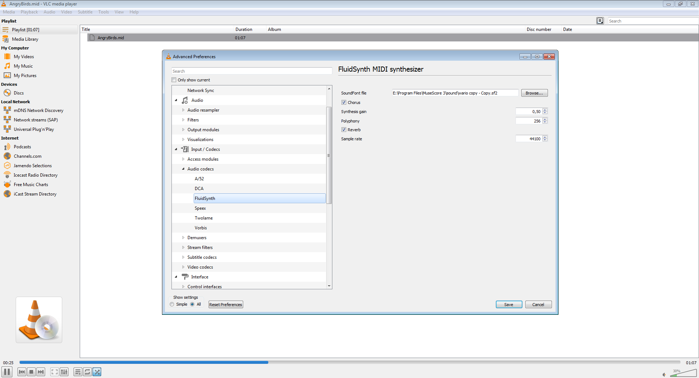
Sound good. Now let’s talk about the insertion.
Insertion of the midi
The easiest way is to use Mid2Agb and Sappy.
I will use a virtual machine to launch sappy but I won’t describe it here because it takes time and it’s out of the scope of this tutorial. If you're lucky enough Sappy will work out of the box in your computer, but otherwise you’ll need to do the same kind of setup (Or, run compatibility mode. :p -IamRifki).
If you use a virtual machine, put the rom, the midi and the sappy & mid2agb installer in a shared folder. Extract the archive with a tool like 7-Zip
Make sure your midi's filename doesn’t contain special characters, Then drag and drop (or use cmd.exe) your midi to mid2agb.exe.
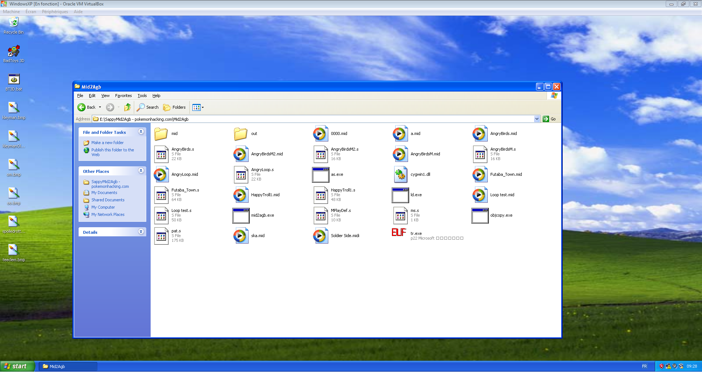
You should get an “.as” file.
Open Sappy. Select the Wario Land 4 rom.

Select the right track number (listen to make sure it is a good fit) In our case this is 672 (0x2A0 in hexadecimal).
Select assemble song.
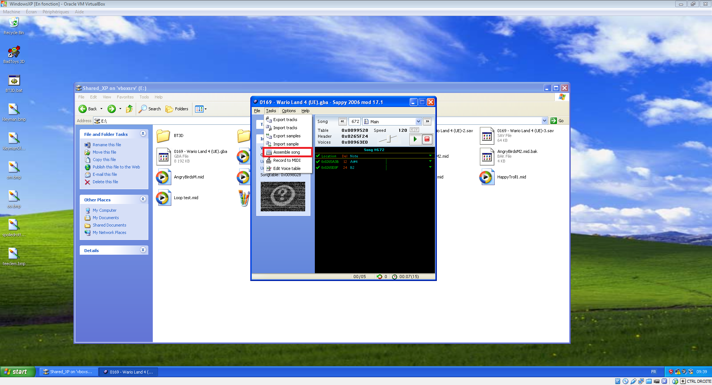
Select the “.as” file with the same name as your midi and press Cook it.
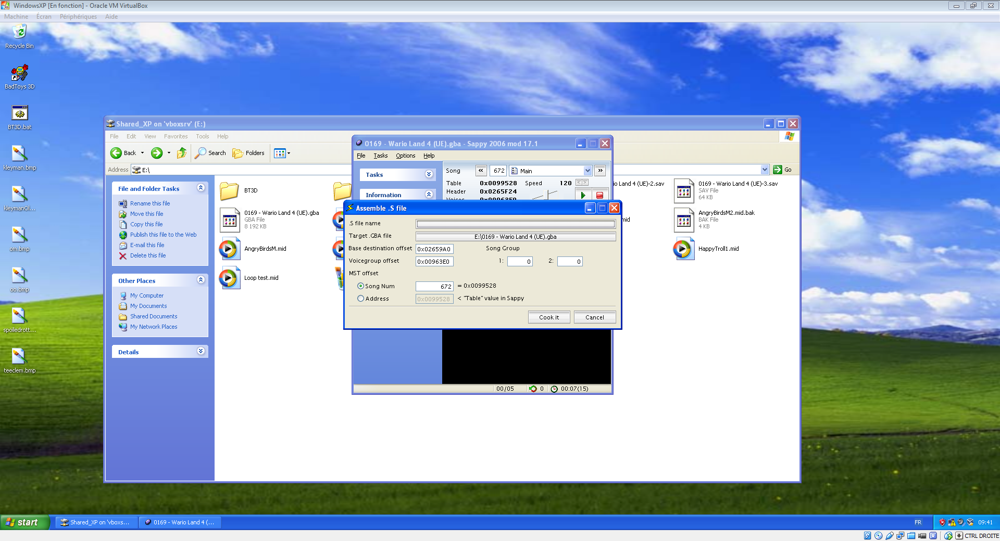
You can listen the song again in Sappy to make sure it works.
Now you have successfully inserted a midi in the Wario Land 4 Rom! Here is the final result: